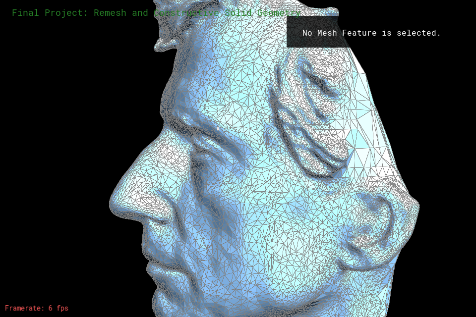
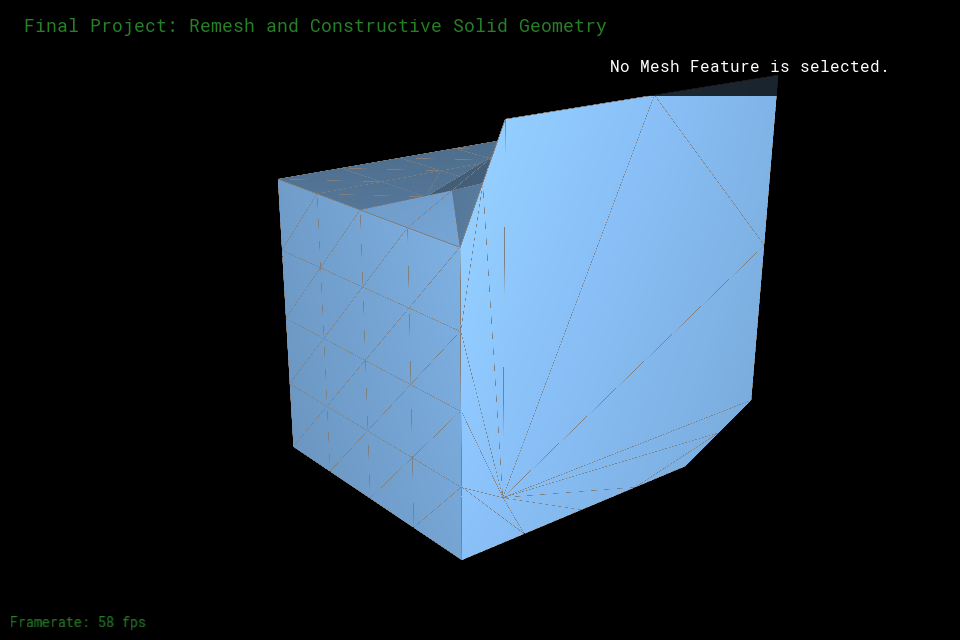
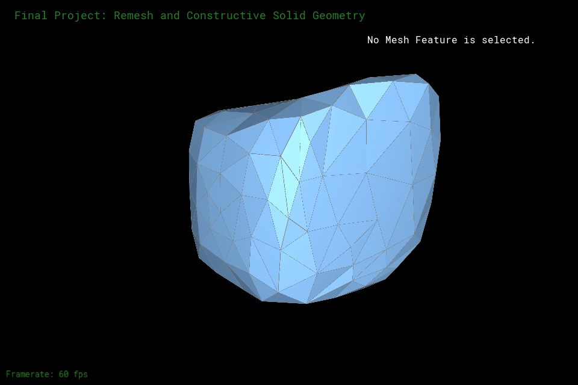
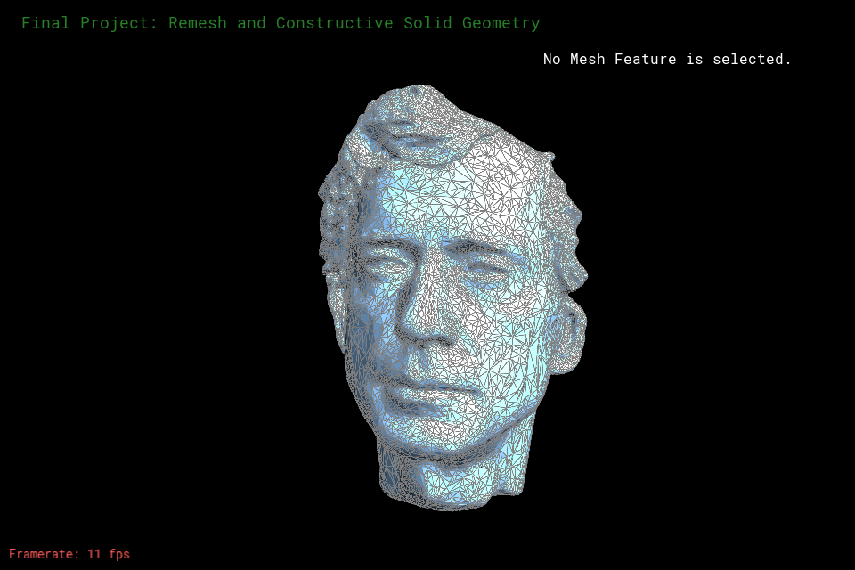

Abstract
This project focuses mainly on mesh manipulation and geometric processing. We implemented common geometric processing operations like mesh regularization (isotropic remeshing) and mesh simplification. We also worked to implement the union boolean operation for constructive solid geometry. The goal was to join two input meshes into one output mesh while maintaining the input mesh volumes.
Technical Approach
Isotropic Remeshing
Often with free-form sculpting, meshes may contain many faces of different sizes which can lead to artifacts when undergoing other geometric processing operations. With isotropic remeshing, we aim to regularize mesh topology to contain triangles with greater uniformity in size and shape. Because we used an explicit representation for our mesh, we implemented the remeshing algorithm from Botsch & Kobbelt's paper: A Remeshing Approach to Multiresolution Modeling" for our project. Our implementation did not stray far from the algorithm details from the paper.
Implementing Edge Collapse and Remesh
We iterate through all the halfedge elements within the mesh and:
- Split all edges at their midpoint if the edges are longer than 4/3rds of target length (in our case, the average edge length: calculated by first iterating over all the edges and and averaging the lengths)
- Collapsed edges that were less than 4/5ths mean edge length
- Flipped edges to improve vertex degrees (improvement shown with smaller deviations from valence of 6 for all vertices)
- Tangentially smoothed surfaces via vertex relocation
Edge flip & edge split implementation was completed in Project 2.
Edge collapse required the deletion of existing mesh elements as we are decreasing the number of triangles within the overall mesh. For a given edge collapse, we delete 2 faces, 3 edges, 1 vertex, and 6 halfedges. We then reassigned neighboring pointers to reflect the deletion of old mesh elements. We also had to check for cases where we don't collapse the edge, such as when it resulted in a flipped triangle or a double plane.
Problems We Faced
Edge collapse caused alot of issues for us as it behaved as expected when used by itself, however, it caused the program to segfault during remeshing. We believed the method was not correctly deleting mesh elements from their respective lists. In the end, we realized that we were not reassigning pointers correctly as our "base case" was too complicated. After fixing the pointer reassignment issue within edge-collapse, our program no longer segfaulted upon remeshing.
Constructive Solid Geometry: Union
To set up this operation, we implemented UI interaction with the meshes. By toggling "O", we can select the entire object and move it on screen. Our implementation of the union operation requires strict ordering of meshes. To conduct this operation: select the first mesh and hit "A", then select the second mesh and hit "B", and finally hit "+" or "=" to add the two elements together.
We read a variety of papers on how to implement this section. However, most papers discuss implicit mesh representations. Because we represent the mesh explicitly, we had very few papers to refer to and decided to devise our own method. At a high level, we would find the intersections of the two meshes, delete the intersections, and bridge the boundary faces left over from deleting the intersections. Because we did not follow any particular paper for this method, our union algorithm is more or less unique.
Since our implementation merges two meshes with unordered boundary traversal, we decided to work with the polymesh and mesh nodes instead of the halfedge data structure. Given two input meshes (meshA and meshB), we output one mesh that is the union of the two meshes. First, we find the intersections between meshA and meshB, delete the faces that are within the intersection, and put them into a polymesh. Then, we add all the boundary vertices of meshA and meshB to individual lists. We then bridge these vertices together by creating triangles between two boundary vertices from meshA and the closest boundary vertex from meshB. Then, we build another triangle using two boundary vertices from meshB (one of which is from the first triangle) and a boundary vertex from meshA. We do this for all boundary vertices of meshA and meshB. Next, we add the nonboundary faces of meshA and meshB to the polymesh by creating triangles with the three vertices of each face. Then, we merge all the vertices of the polymesh. Finally, we delete meshA and meshB and return our newly built mesh.
Problems We Faced
This section was the most frustrating part of the project and we encountered two problems: intersection detection & boundary faces.
As discussed above, we used an explicit mesh representation while most papers discuss implicit mesh representations for constructive solid geometry. Because of this, we could not find many relevant resources on boolean operations for explicit mesh representations. We attended office hours and spoke to Ren who mentioned the necessity of intersection detection. Following his advice, we attempted to implement intersection detection:
- First, we found bounding boxes for the two input meshes (meshA & meshB) by iterating through each individual mesh and tracking the minimum and maximum vertex positions in all three dimensions.
- Next, we looped through all vertices of the two meshes and checked if they were within the opposing mesh's bounding box. We added all vertices that were in the other mesh's bounding box to an
intersectionlist and all non-intersecting vertices into anon-intersectinglist. - Finally, the non-intersecting elements were added to a new polymesh and returned.
We spent a long time trying to work with boundary faces. However, we found that boundary faces do not work as described in the Project 2 spec as calling the vertex of the next halfedge resulted in a segfault. We decided to work with boundary vertices instead. Due to the lack of ordered traversal, we had trouble implementing the bridging method precisely. We implemented a couple different methods to create our own list for storing and traversing newly created boundary edges. Upon deleting the intersection, the two meshes will have vertices that are very close to each other. Ultimately, we ended up bridging the vertices together by growing our triangles with the nearest vertex of the intersecting meshes.
Mesh Simplification
Mesh simplification is especially useful in cases where high resolution meshes are unnecessary or computationally expensive to process. By simplifying the mesh and decreasing the number of polygons within a mesh, the operation aims to increase efficiency while maintaining quality similar to the input mesh. This helps with boolean operations in the case that the two meshes we want to boolean are not similar enough in terms of the number of faces near the intersection. We used Garland & Heckbert's paper on Surface Simplification Using Quadric Error Metrics algorithm for our simplification implementation. Once again, we followed the algorithm from the paper pretty closely. We did not originally plan on doing mesh simplification and added this functionality after finding CSG to be very difficult.
First, we iterate through all the faces of the mesh and calculate each face's quadric error matrix which can be used to calculate the distance between the face and a point. Next, we set the quadric of the vertices by summing the quadric error of all faces surrounding the vertex. Then, we set the quadric error of the edges by summing the quadric error of both of the edge's vertices. We continue by finding the point along the edge that minimizes the quadric error and collapse edges with the smallest cost. After collapsing 20% of the triangles present in the mesh, we stop. Finally, we go back and sum up the vertex's quadric error matrix again because the neighbors have now changed as well as the neighboring edges' quadric error matrices.
Problems We Faced
There were virtually no problems here as most of our problems were with collapsing in the remesh algorithm.
Lessons We Learned
- To implement UI interaction and manipulate on screen elements
- Appreciate how well scaffolded the projects were as remeshing and simplification were straightforward with methods implemented in Project 2
- To use previously learned topics for non-intended purpose (ex: bounding boxes for raytracing was used for intersection detection)
- To better scope out projects (we didn't realize the different mesh representations incongruities until midway through remeshing)
Results
Isotropic Remeshing Results
Note that the triangles become more uniform in shape with each iteration. A stark difference can be seen in the triangles at the back of Peter's head between Fig. 1 and Fig. 2. By Fig. 5, the triangles take on uniform shape and size.
|

|

|

|

|
Note that the large triangles on the extruded face of Fig 6. diminishes in area each iteration of remesh. The triangles become more uniform in area as well as shape.
|

|

|

|

|
UI Interaction Results

Union Operation and 2 Iterations of subdivision Results

Mesh Simplification Results
Note that Peter maintains his relative shape while decreasing the number of polygons on his face. This makes geometric processing more efficient overall as quality is not sacrificed for efficiency.

|

|

Note that the teapot strays further from its original mesh as we increase the simplification iterations because the minimum quadric error increases as we decrease the number of polygons in the mesh

|
|

|

|

References
Isotropic Remeshing Resources:
Constructive Solid Geometry Resources:
- Speedups in Constructive Solid Geometry: used for intersection detection
- Mesh Arrangements for Solid Geometry
Mesh Simplification Resources:
Contributions
Vi: I worked on the implementation of the remeshing and simplification algorithm. I also worked on the check for cases where the edges shouldn't be collapsed. For constructive solid geometry, I worked on implementing UI functions like moving the whole object by clicking and dragging as well as selecting meshes as mesh A and mesh B. I've also made the bridging function between the boundary edges of two different meshes for the latter part of the union operation. I provided visuals for the writeup, slides, and videos.
Isabel: I worked on part of the remeshing segment of the project, particularly the edge-collapse method. I also implemented the intersection detection for the union boolean operation with bounding boxes. Additionally, I assembled the milestone and final videos, the slide decks for the milestone and final, as well as the websites for the milestone and final reports.
Disclaimer: Simplification was not initially in our proposal but we decided it may help balance the two meshes before boolean operations. Also, it was a last ditch effort to save our grade since we had the functions we needed from implemented remesh.
Past Videos
Final Video
Milestone Video
Past Presentations
Final Presentation Slide Deck
Milestone Presentation Slide Deck
Thanks
We wanted to thank Professor Ren Ng and all the TAs for their help with the project and the course. The projects were very well scoped and were both fun and interesting.